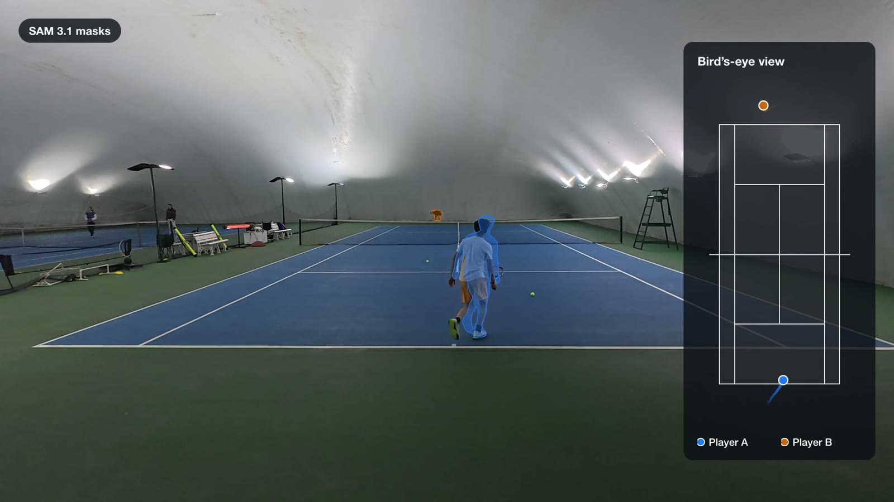
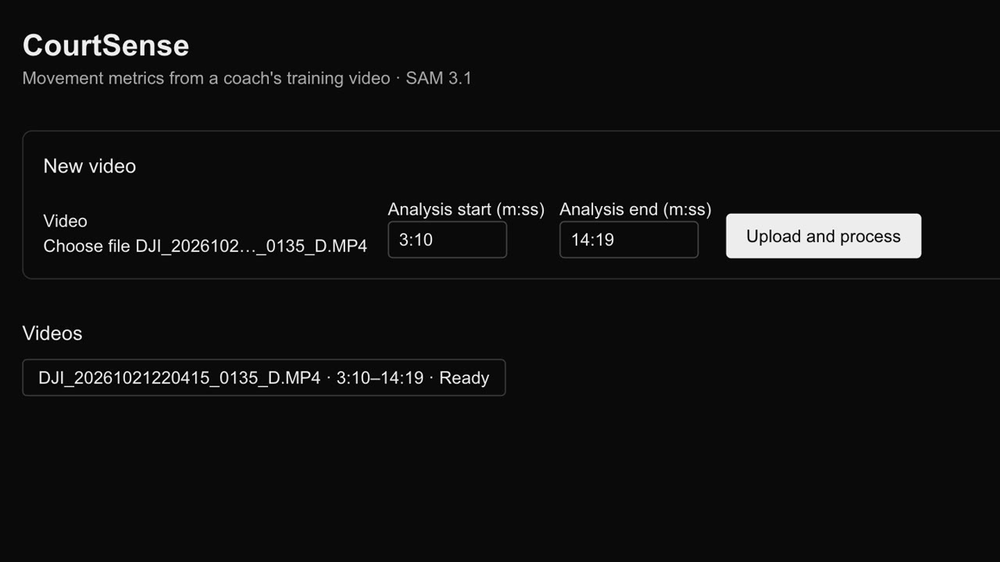
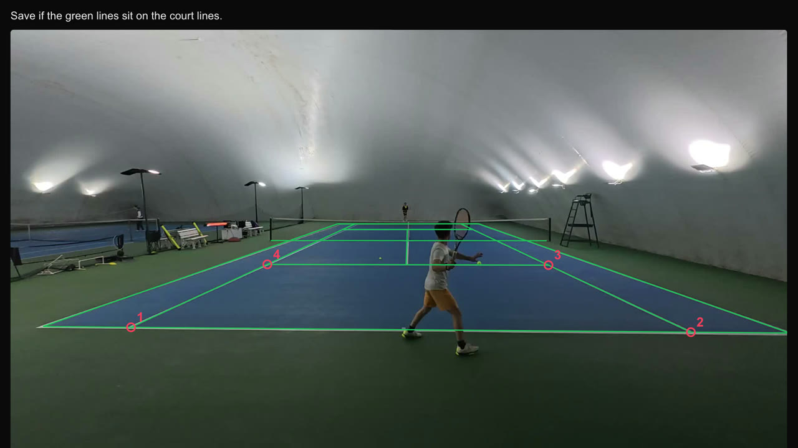
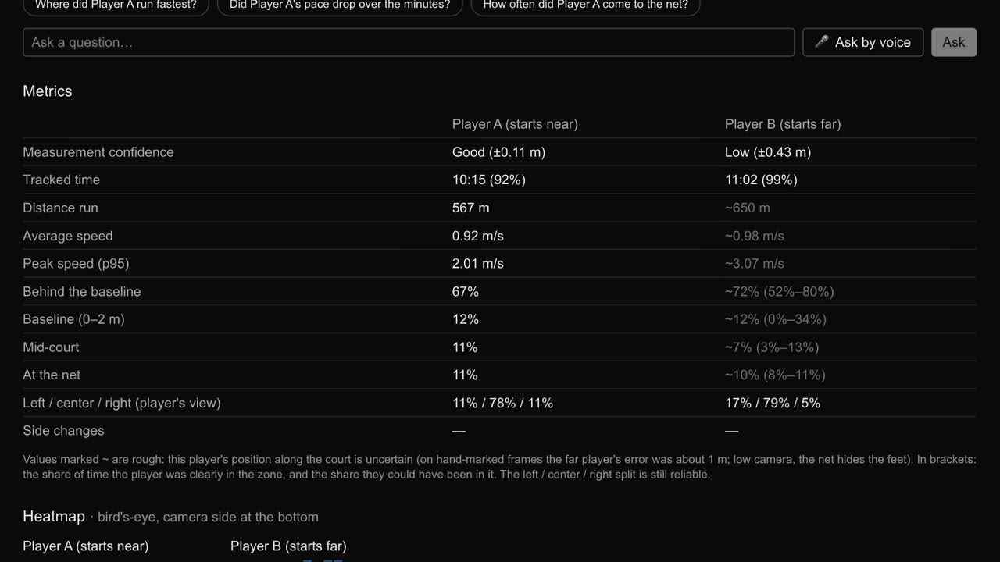
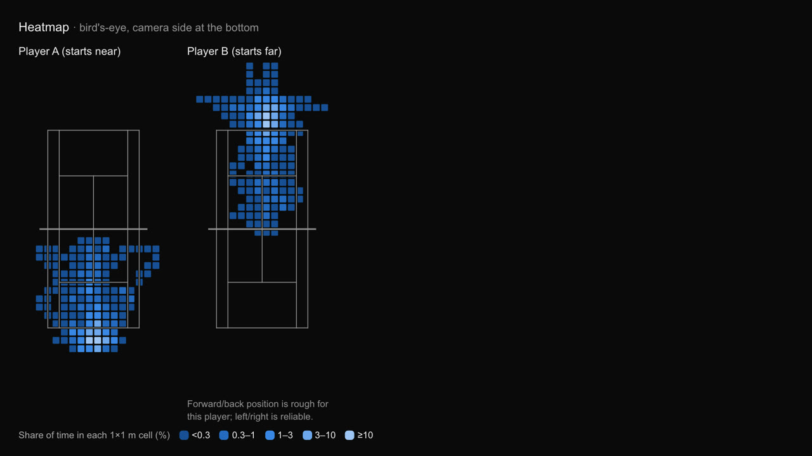
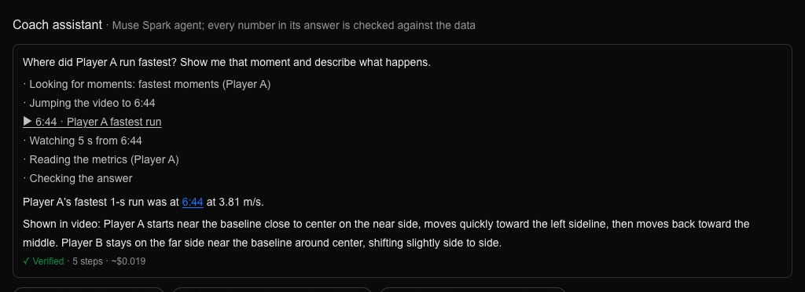
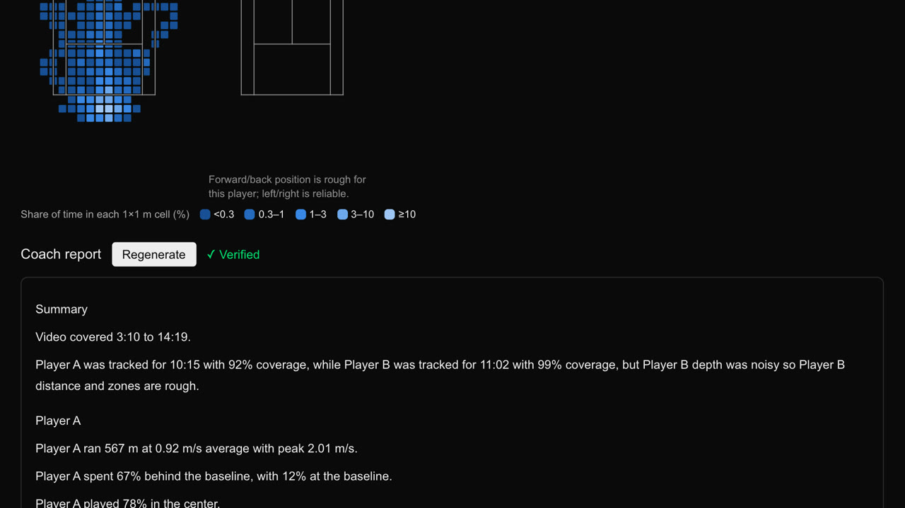

Meta Global AI Developer Hackathon · категория Indie Developer
Одна камера.
Настоящие данные о движении.
CourtSense превращает обычное тренировочное видео теннисного тренера в дистанцию, скорость, положение на корте и тепловую карту для каждого игрока. Meta SAM 3.1 отслеживает игроков, а агент Muse Spark отвечает тренеру и проверяет каждое число, которое называет.

Проблема
Тренеры снимают каждую тренировку. А потом могут только пересматривать.
Чтобы узнать, сколько пробежал игрок, как быстро и где он стоял, обычно нужны системы трекинга, которые большинству клубов не по карману. У нашего тренера одна камера за задней линией. CourtSense работает именно с этим.
Как это работает
От видео тренера к корту в метрах
-
1
Загрузите тренировку
Тренер выбирает часть видео для анализа. Один потоковый запрос к SAM 3.1 находит обоих игроков и отслеживает их в каждом кадре. 12-минутная тренировка — это 10,688 кадров, и она стоит около $2.14.

-
2
Отметьте четыре точки корта
Четыре клика в точках пересечения линий одиночной игры задают гомографию. После этого каждый шаг — это позиция на корте в метрах от центра ближней задней линии (корт для одиночной игры — 8.23 м в ширину и 23.77 м в длину).

-
3
Смотрите на числа
Дистанция, средняя и максимальная скорость, время за задней линией, на задней линии, в середине корта и у сетки, распределение слева/по центру/справа и тепловая карта для каждого игрока. Если измерение приблизительное, значение помечается знаком ~, а не выглядит точным, и доли по зонам даются с диапазоном.


-
4
Спросите помощника тренера
Агент Muse Spark сам выбирает инструменты, перематывает видео к моменту, о котором говорит, и может сам посмотреть этот фрагмент. Тренер может напечатать вопрос или задать его голосом. Каждое число в ответе сверяется с данными до того, как тренер его увидит, — так же, как каждое число в отчёте для тренера.

-
5
Получите отчёт
После каждой тренировки Muse Spark пишет короткий отчёт только по измеренным числам, на английском или турецком — языке нашего тренера.

Одна настоящая тренировка
Что измерил CourtSense
С тренировки нашего тренера. При низкой камере сетка закрывает ноги дальнего игрока, поэтому его числа помечены как приблизительные, с диапазонами. Ошибки измерены относительно ног, отмеченных вручную. Подробности — в репозитории.
Внутри помощника тренера
Он показывает ход работы и не может выдумать числа
Where did Player A run fastest? Show me that moment and describe what happens.
- Looking for moments: fastest moments (Player A)
- Jumping the video to 6:44
- ▶ 6:44 · Player A fastest run
- Watching 5 s from 6:44
- Reading the metrics (Player A)
- Checking the answer
Player A's fastest 1-s run was at 6:44 at 3.81 m/s.
✓ Verified · 5 steps · ~$0.019
Настоящий запуск, записанный в приложении. Агент использует один инструмент за ход, не больше восьми ходов:
get_metricsметрики тренировки по игрокам, с пометками о надёжностиfind_momentsсамые быстрые и самые длинные пробежки и выходы к сетке, по времени видеоminute_breakdownметры в минутуshow_momentперематывает видео тренера к нужному моментуlook_at_clipвырезает 2–8 секунд и спрашивает Muse Spark, что происходитanswerитоговый ответ: каждое число указывается как утверждение и сверяется с данными тренировки, иначе ответ возвращается модели
Meta AI внутри
Что здесь делает каждая модель Meta
| Модель или пакет Meta | Что делает в CourtSense |
|---|---|
| SAM 3.1 | Находит обоих игроков и отслеживает их в каждом кадре тренировки по текстовому запросу "tennis player" — одним потоковым запросом через Meta Model API. |
| Muse Spark 1.3 | Работает помощником тренера: выбирает инструменты, смотрит короткие клипы через видеовход, отвечает на английском или турецком. Также пишет отчёт для тренера. |
| Muse Voice Transcribe | Позволяет тренеру задавать вопросы голосом, на английском или турецком. Слова попадают в поле вопроса, чтобы их можно было проверить перед отправкой. |
@meta-sam/parser | Разбирает потоковый вывод SAM 3.1 в рамки и маски для каждого кадра. |
@meta-sam/react, @meta-sam/graphics | Воспроизводят тренировку в браузере, рисуя маску каждого игрока его цветом. |
Сделано для настоящего тренера
Сделано на тренировках нашего тренера
Я снимаю все наши тренировки, но до сих пор мог их только пересматривать. С CourtSense я вижу в числах, сколько пробегает игрок и где он стоит на корте. Теперь я буду планировать тренировки по этим данным.
Наш тренер в голосовом сообщении (перевод с турецкого). Тренировку снял наш тренер, с согласия обоих игроков.
Не очередной спортивный анализатор.Он сделан для нашего собственного тренера, и в его основе SAM 3.1.
Честные ограничения
Чего он пока не умеет
Нет отслеживания мяча
На наших записях SAM 3.1 путал потолочные лампы и вывески с мячом, поэтому статистики ударов и очков пока нет.
Приблизительная глубина на дальней стороне
При низкой камере положение дальнего игрока вперёд-назад приблизительное: около 1 м ошибки на кадрах, отмеченных вручную. Приложение это помечает и даёт диапазоны по зонам вместо догадок. Положение слева-справа остаётся надёжным.
Дрейф камеры
Медленный дрейф подвеса камеры за долгую тренировку пока не компенсируется.